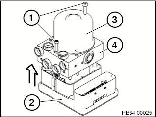
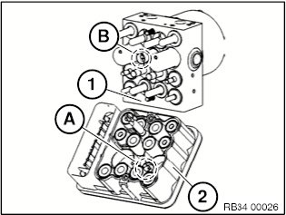
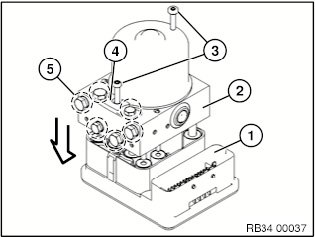
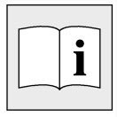

34 52 700 Replacing DSC Valve Block
34 52 700 Replacing DSC valve blockImportant!
Read and comply with notes on protection against electrostatic discharge (ESD protection).
Necessary preliminary work:
^ Remove hydraulic unit.
^ Immediately close off all hydraulic connections with protective caps!
^ Clean outside of control unit.
Important!
^ The hydraulic unit must not be more than 7 years old.
^ May only be replaced once.
Check repair history!
^ No longer install hydraulic unit if subjected to mechanical stress (dropped, impact).
^ Then use lint-free cloths and cleaning agent free of mineral oil.
^ Do not touch any contact surfaces on the connector, pressure sensor and control unit with the hand or objects.

Important!
^ Control unit must not come into contact with dirt or moisture.
^ Contacts must not be bent!
Release screws (1).
Firmly hold pump motor (3) together with valve block (4).
Carefully detach control unit (2).

Important!
^ The white molding compound at the base of the control unit (2) serves as a seal and must not be removed.
^ Do not touch the contacts of pressure sensors (A) and (B) at valve block (1) and control unit (2) otherwise they could corrode.

Take valve block (2) out of packaging (part number 67 97 896).
Place valve block (2) straight on control unit (1) without twisting.
Installation Note:
Replace screws (3).
Tightening torque 34 51 1AZ
Important!
^ The hydraulic unit is completely sealed in the area of the pressure sensor connection only after complete assembly.
Installation Note:
^ When installing the hydraulic unit, only remove retaining tab (4) and screw plug (5) directly before connecting the brake lines.

^ Brake line mix-up test:
^ Bleed braking system